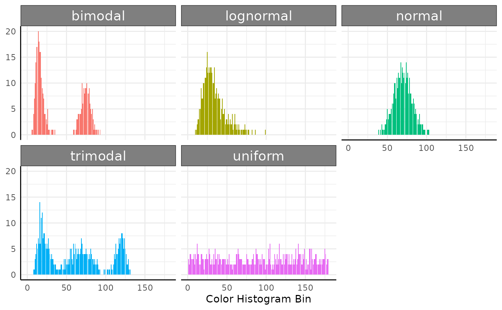

Multi Value Trait Analysis with `pcvr`
pcvr v1.0.0
Josh Sumner
Source:vignettes/articles/pcvrTutorial_mvt.Rmd
pcvrTutorial_mvt.RmdOutline
-
pcvrGoals - Load Package
- What are multi value traits?
- Multi value trait format
- Functions for multi-value trait analysis
pcv.joyplotpcv.emdpcv.netconjugate- Resources
pcvr Goals
Currently pcvr aims to:
- Make common tasks easier and consistent
- Make select Bayesian statistics easier
There is room for goals to evolve based on feedback and scientific needs.
What are multi-value traits?
Here our segmentation easily shows area, height, and other numeric phenotypes. To describe the color of this plant then we need a more complex phenotype.

What are multi-value traits?
There are many ways to describe color, many wavelengths to measure color in, and many indices that can be calculated from those wavelengths.
Since each pixel has a color we describe the entire image using a histogram of those values
Multi value trait format
PlantCV returns multi-value traits as histograms in long format
structure(list(sample = c(
"default", "default", "default", "default",
"default", "default", "default", "default", "default", "default",
"default", "default", "default", "default", "default"
), trait = c(
"hue_frequencies",
"hue_frequencies", "hue_frequencies", "hue_frequencies", "hue_frequencies",
"hue_frequencies", "hue_frequencies", "hue_frequencies", "hue_frequencies",
"hue_frequencies", "hue_frequencies", "hue_frequencies", "hue_frequencies",
"hue_frequencies", "hue_frequencies"
), value = c(
0.805186656906828,
1.04569695702186, 1.19906584405173, 1.76025654432012, 2.43647390986092,
3.29220258635714, 4.97926034368573, 6.07201366377357, 8.33071909094078,
8.61131444107498, 8.26100596047266, 7.65624455366168, 6.45543588134825,
5.53347973090732, 5.05245913067726
), label = c(
81L, 83L, 85L,
87L, 89L, 91L, 93L, 95L, 97L, 99L, 101L, 103L, 105L, 107L, 109L
)), row.names = 3641:3655, class = "data.frame")## sample trait value label
## 3641 default hue_frequencies 0.8051867 81
## 3642 default hue_frequencies 1.0456970 83
## 3643 default hue_frequencies 1.1990658 85
## 3644 default hue_frequencies 1.7602565 87
## 3645 default hue_frequencies 2.4364739 89
## 3646 default hue_frequencies 3.2922026 91
## 3647 default hue_frequencies 4.9792603 93
## 3648 default hue_frequencies 6.0720137 95
## 3649 default hue_frequencies 8.3307191 97
## 3650 default hue_frequencies 8.6113144 99
## 3651 default hue_frequencies 8.2610060 101
## 3652 default hue_frequencies 7.6562446 103
## 3653 default hue_frequencies 6.4554359 105
## 3654 default hue_frequencies 5.5334797 107
## 3655 default hue_frequencies 5.0524591 109Multi value trait format
In pcvr you can choose to read multi value traits in
wide format with mode="wide" in read.pcv.
structure(list(hue_frequencies.45 = c(
0.0154487872701993, 0,
0, 0, 0
), hue_frequencies.47 = c(
0, 0, 0, 0.0749063670411985,
0
), hue_frequencies.49 = c(
0.0308975745403986, 0.37593984962406,
0.0774593338497289, 0, 0
), hue_frequencies.51 = c(
0, 0, 0, 0,
0.0657894736842105
)), row.names = 100:104, class = "data.frame")## hue_frequencies.45 hue_frequencies.47 hue_frequencies.49 hue_frequencies.51
## 100 0.01544879 0.00000000 0.03089757 0.00000000
## 101 0.00000000 0.00000000 0.37593985 0.00000000
## 102 0.00000000 0.00000000 0.07745933 0.00000000
## 103 0.00000000 0.07490637 0.00000000 0.00000000
## 104 0.00000000 0.00000000 0.00000000 0.06578947. . .
Either option will work for most pcvr functions.
Simulated data
set.seed(123)
simFreqs <- function(vec, group) {
s1 <- hist(vec, breaks = seq(1, 181, 1), plot = FALSE)$counts
s1d <- as.data.frame(cbind(data.frame(group), matrix(s1, nrow = 1)))
colnames(s1d) <- c("group", paste0("sim_", 1:180))
s1d
}
sim_df <- rbind(
do.call(rbind, lapply(1:10, function(i) {
simFreqs(rnorm(200, 70, 10), group = "normal")
})),
do.call(rbind, lapply(1:10, function(i) {
simFreqs(rlnorm(200, log(30), 0.35), group = "lognormal")
})),
do.call(rbind, lapply(1:10, function(i) {
simFreqs(c(rlnorm(125, log(15), 0.25), rnorm(75, 75, 5)), group = "bimodal")
})),
do.call(rbind, lapply(1:10, function(i) {
simFreqs(c(rlnorm(80, log(20), 0.3), rnorm(70, 70, 10), rnorm(50, 120, 5)), group = "trimodal")
})),
do.call(rbind, lapply(1:10, function(i) {
simFreqs(runif(200, 1, 180), group = "uniform")
}))
)
sim_df_long <- as.data.frame(data.table::melt(data.table::as.data.table(sim_df), id.vars = "group"))
sim_df_long$bin <- as.numeric(sub("sim_", "", sim_df_long$variable))
sim_plot <- ggplot(sim_df_long, aes(x = bin, y = value, fill = group), alpha = 0.25) +
geom_col(position = "identity", show.legend = FALSE) +
pcv_theme() +
labs(x = "Color Histogram Bin") +
theme(axis.title.y = element_blank()) +
facet_wrap(~group)Here we simulate wide data, then lengthen it for plotting.
sim_plot
pcv.joyplot
We can make joyplots and using pcv.joyplot
(p <- pcv.joyplot(sim_df, index = "sim", group = c("group")))
pcv.joyplot
The plot output is a ggplot object so we can change it
to match our needs. Here we show these distributions as if they are
hues.
p + scale_fill_gradientn(colors = scales::hue_pal(l = 55)(360))## Scale for fill is already present.
## Adding another scale for fill, which will replace the existing scale.
pcv.emd
Sometimes the multi-value trait histograms will not follow a unimodal distribution, or other aspects of what kind of test to use will be unclear.
For those situations one option is to use earth mover’s distance.
Earth Mover’s Distance
EMD measures the amount of work needed to change one histogram into another.
EMD then can be used to quantify the difference in color histograms.
Here the EMD would be 0.01 since only 1 count has to move 1 space out of 100 total observations:
#* visual of emd
set.seed(123)
df <- data.frame(x = round(runif(101, 1, 10)), y = c(rep("original", 99), "old", "new"))
df[100:101, "x"] <- c(5, 6)
p1 <- ggplot(df[df$y != "new", ], aes(x = x)) +
geom_histogram(binwidth = 1, color = "white") +
scale_x_continuous(breaks = c(1:10)) +
scale_y_continuous(limits = c(0, 15)) +
labs(title = "Sample 1", y = "Counts", x = "Bin") +
pcv_theme()
p2 <- ggplot(df[df$y == "original", ], aes(x = x)) +
geom_histogram(binwidth = 1, color = "white") +
scale_x_continuous(breaks = c(1:10)) +
scale_y_continuous(limits = c(0, 15)) +
geom_rect(
data = data.frame(x = 1), aes(xmin = 4.5, xmax = 5.5, ymin = 14, ymax = 15),
fill = "blue", color = "white", alpha = 0.25
) +
geom_rect(
data = data.frame(x = 1), aes(xmin = 5.5, xmax = 6.5, ymin = 6, ymax = 7),
fill = "red", color = "white", alpha = 1
) +
labs(title = "Sample 2") +
labs(x = "Bin") +
pcv_theme() +
theme(
axis.line.y.left = element_blank(),
axis.title.y = element_blank(),
axis.text.y = element_blank()
)
p1 + p2
pcv.emd
Here we use the wide data (although long can also be used).
The “reorder” argument specifies groups to arrange together in the
resulting plot if plot=TRUE.
If mat=TRUE then a distance matrix is returned,
otherwise a long dataframe is returned.
For details see ?pcv.emd
pcv.emd
Looking at the plot we can see that there are obvious differences between groups in our data.
sim_emd$plot
pcv.net
With non-matrix pcv.emd output we can make a network to
better understand the color similarities in our data. Here we include a
numeric filter which removes edges with an EMD below that value.
Note that the default behavior changes EMD from a distance to a dissimilarity.
## $nodes
## [1] "data.frame"
##
## $edges
## [1] "data.frame"
##
## $graph
## [1] "igraph"
net.plot
Now we can visualize our network using net.plot.
net1 <- net.plot(n, fill = "group") +
labs(color = "", title = "Network 1") +
theme(plot.title = element_text(hjust = 0.5)) +
scale_color_discrete(limits = c(
"bimodal", "lognormal", "normal",
"trimodal", "uniform"
))
net.plot
Our results show very clear clustering and highlight that the uniform distribution is most dissimilar to the others since it is excluded entirely. We can make another network to include it.
net1
pcv.net
Here we specify our filter as a character, which is interpreted as a quantile here keeping only edges that are above median strength.
conjugate
Sometimes your distributions follow a parameterized distribution in which case more robust comparisons are possible.
The conjugate function can compare “t” (gaussian means),
“gaussian”, “beta”, “lognormal”, “dirichlet”, and “dirichlet2”
distributions of multi-value traits.
conjugate
Multi-value traits can be provided to conjugate as
matrices. Here we subset our data to two samples.
conjugate
The results are also returned as a summary dataframe
res$summary[, -c(1:6)]## hyp post.prob HDE_rope HDI_rope_low HDI_rope_high rope_prob
## 1 equal 0.1676276 0.9727331 0.1951233 1.802536 1Resources
If you run into a novel situation please reach out and we will try to
come up with a solution and add it to pcvr if possible.
Good ways to reach out are the help-datascience slack channel and pcvr github repository.